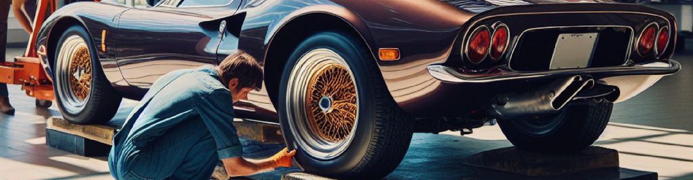

Revival
Página de inicio
(current)
Servicios
Montallantas
Mantenimiento
Alineación
Balanceo
Contacto
Buscar

Servicio de Montallantas de Alta Gama
Alineación y Balanceo de Llantas:
Aseguramos que tus llantas estén perfectamente alineadas y balanceadas para una conducción suave y segura.
Despinche a Domicilio:
Respondemos rápidamente a cualquier emergencia, proporcionando reparaciones in situ con la máxima comodidad.
Latonería y Pintura:
Restauramos la estética de tus llantas y rines a su gloria original con acabados de alta calidad.
Rectificación de Rines Dañados:
Reparamos rines abollados o dañados, devolviéndoles su forma y funcionalidad óptimas.
Revisión de Suspensión:
Evaluamos y ajustamos la suspensión para mejorar la maniobrabilidad y el confort en la carretera.
Revisión de Válvulas de Neumáticos y de Llantas:
Mantenemos tus neumáticos en las condiciones ideales para un rendimiento superior.
Vulcanizado de Llantas:
Reparamos llantas con daños menores, extendiendo su vida útil y garantizando seguridad.
Contacto
Teléfono y WhatsApp: +57 3207208017
contactorevival@revival.com
Armenia, vía La Tebaida km 9